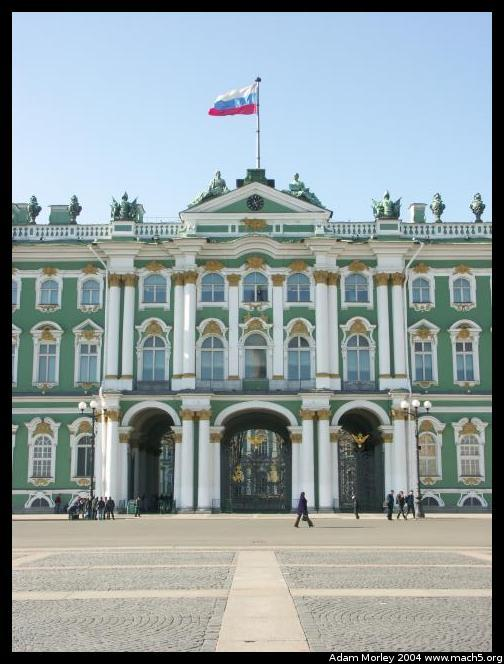
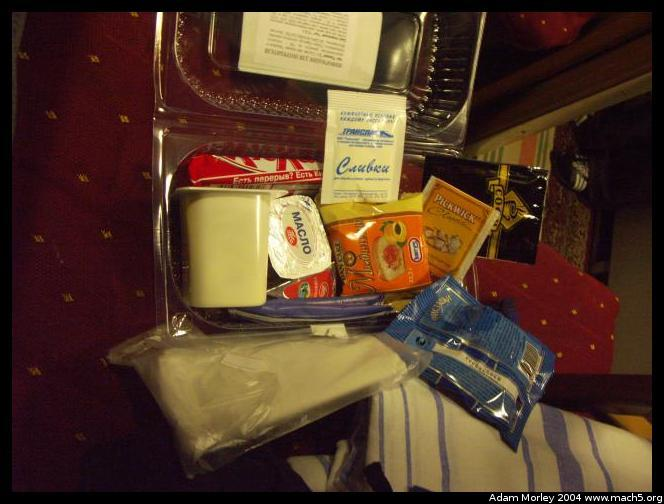
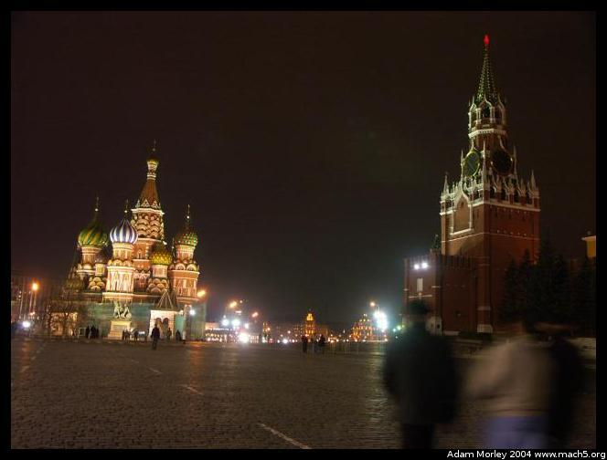
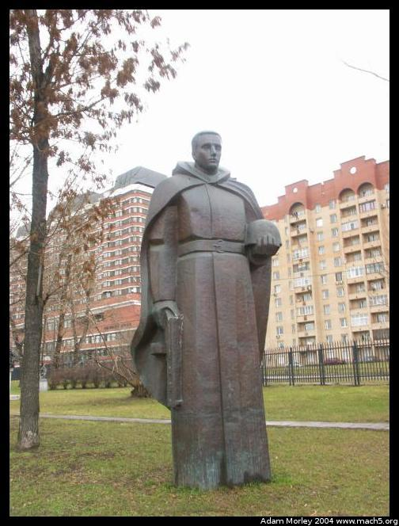

I visited Russia during the Spring of 2004 with DIS. We traveled by plane to St. Petersburg, by night train to Moscow and flew back to Copenhagen. Visas were required. Russian night trains (we went second class, on night train #1 --- the Red Arrow, not kidding) are quite nice. Russia proved to be a very odd place to visit, largely a result of the contrast between developed and undeveloped. Writing this in 2006, I am of the opinion that Russia has more "culture-shock" factor than Africa, largely a result of the stark contrast. Perhaps it is the order in which I traveled to certain places. I would love to spend more time in Russia --- it does cover eleven timezones, and simply seeing Moscow and St. Petersburg doesn't really seem like seeing Russia. Both cities are very European, St. Petersburg more so.
We went to St. Petersburg first, and stayed in the Hotel Moscow, near Alexander Nevsky Square.
The view out our hotel window, across the Neva river. That is ice.
A view of Peter and Paul's fortress, from near this rather odd looking structure that I forget the name of:
It is clear I should've edited these sooner than two years later.
A local souvenir seller, and yet-another-famous-guy-on-a-horse
Hotel Astoria
Traffic. I thought it was bad in St. Petersburg, but Moscow would prove even worse.
St. Isaacs. The view from the top was amazing
Inside Peter and Paul's fortress is this rather odd looking statue, complete with a finger that you rub for good luck.
Peter and Paul's fortress in St. Petersburg is home to the bodies of many of Russia's Czars. Russian churches, palaces and significant builds have so much gold leaf it can make a person's head spin. I saw Russia's palaces before Versailles, and Russia's palaces made Versailles look like a modest country home for the middle class. Is it any wonder the average person was not happy in these countries?
Peter and Paul's fortress was built on an island in the Neva River delta, in May of 1703. The rest of St. Petersburg spreads out from there. The 300 year celebration in St. Petersburg was quite a big deal, and many buildings had been restored for the celebration.
Interior details inside Peter and Paul's fortress.
Further interior details.
The tomb of Czar Nicholas II, former czar of Russia before the Bolsheviks and executed him and his family during the revolution.
Exterior of the church.
These people have coats on. So did I. They have their cameras out. Why?
Because the Russians are going for a swim! Yes, that's ice!
"You see, the walls warm in the sun," said our tour guide.
They really do swim in the Neva in April.

Another exterior of the church in Peter and Paul's fortress.
A local, reading the paper in the park.
The view from the top of St. Isaacs.
With the church of The Saviour-on-the-Blood in the background.
While I was on top, it seems that some sort of explosion went off, and large amounts of smoke billowed into the sky. I never did find out what happened.
The Hermitage Museum is near Peter and Paul's fortress. Inside, it is truly amazing. The exterior is not exactly shabby either. Also known as Katrina The Great's winter palace, it is located in Palace Square. In the square is the Alexander column, erected to commemorate the Russian's victory over Napoleon.
The Hermitage and the Alexander column.

The General Staff building. The size of these buildings are absolutely amazing, especially given that they were built in the 18th century.
Details of the gate to the square.
Hello Mr. [smelly] Toilet.
The church of The Saviour-on-the-Blood, with detail.
We headed out the next day, to see Katarina the Great's Summer Palace in Pushkin, outside St. Petersburg. This is the palace that makes Versailles look like a summer cottage.
Palace exterior, with detail. Waiting for the palace to open to tourists.
Security, as the palace is quite a landmark.
We wore booties to protect the floors. The entire palace had recently been restored, as it was heavily damaged during World War II.
Staircase, with detail.
The second most ridiculous room in the palace. The tour guide said there was ten kilos of gold leaf on the walls. Effectively, it's a ballroom.
A dining room.
A hallway, with the doors extending into the distance.
The world-famous amber room (the most ridiculous), formerly looted and/or destroyed during WWII. The room was restored for the 300th anniversary of St. Petersburg. Originally, it was a gift from King Friedrich Wilhelm I of Prussia to Peter the Great in 1717.
Detail of an art room. Notice the size of the chairs.
Exterior of the building and one of the many paths in the gardens.

Yes, that's a hatch in a tree.
Our lunch place before heading back to St. Petersburg.
That night, we left St. Petersburg for Moscow. We went by train, on Russian Night Train #1, called, "Red Arrow." I thought we had gone first class (it was quite fine), but upon further reading now, it seems that we traveled second class, since we had four bunks in a cabin.
The hallway.
The lock, and the smart, fold-away ladder.
Complete with food, and amenities.
And a posted list of ... something?
Hello Mr. Toilet.
What trip would be complete without a drunk American college student on a Russian night train? Thankfully, he was not in my cabin.

Arrival the next morning in Moscow. Had I known Russian at the time, I would've known it was the "Red Arrow" --- it says so on the side!
Our group, shortly after arriving in Moscow. On Red Square (which isn't really red), walking towards Gum, the big department store on the right.
One of the towers on the Kremlin, complete with searchlights and cameras.
The Kremlin, Lenin's Mausoleum is the building with the black stripe. You can view a satellite photo here on Google Maps. We went inside, where you can see Lenin's body embalmed in a glass case. There are many turns to get inside, and at the end of each corridor is a guard. When we were entering, the man in front of our group slipped some money to the guards that search bags. Photos are not normally allowed.
Inside Gum.
Souvenir shopping for the little nesting dolls.
The view out our hotel window in Hotel Russia, next to Red Square. Hotel Russia is one of the largest hotel in Europe, with "about 3000 rooms.". It is so large, some of the staff didn't know everything that was inside. Effectively, with four different entrances, it "feels" like four separate hotels. The hotel is so large that underneath is a giant go-kart track. I'm not even kidding. The staff at our entrance didn't know where it was, but we spotted the sign out our window. It was the full deal, with crash suits and helmets and gas-powered go-karts.
St. Basil's Cathedral, Red Square, Moscow, Russia, at night.

Photos at night around near Red Square. One looks across a street towards the largest McDonald's in the world. The last one is a nearby eatery/mall that is partially submerged, where young people seem to hang out. The McDonald's inside plays hard-core techno at lunchtime, and a lady collects your order while you wait in line.
Looking back toward the Kremlin Wall, standing next to the State museum.
Red Square at night.
Touring Moskovsky Komsomolets, a daily paper addressing social and political issues.
Traffic near Red Square. I thought St. Petersburg was bad. Moscow is effectively a "ring city" --- meaning that it grew like the rings of a tree. Each successive ring has a circular road that often looks like this.
More traffic. It's more congested in Russia in terms of lanes and number of cars, but the driving style isn't nearly as hap-hazard as the developing world.

Looking out the top floor of our hotel.

I was told this was a statue meant to commemorate Christopher Columbus, but the Americas didn't want it. So the face was changed, and now it commemorates Alexander the Great. Or something along those lines, it sounded very odd.
Miscellaneous statues in the sculpture park behind the New Tretyakov Gallery.
One of the main churches in Moscow. It was, sadly, closed because Putin was speaking there later that day.
And so ended the trip to Russia. Admittedly, this page is missing most of the more in-depth, funny and/or interesting stories. Those are best conveyed verbally. I did visit the Kremlin and the Bolshoi, but did not take any photos.
The Kremlin was not nearly as exciting as I had hoped for, at least after seeing all of the palaces outside St. Petersburg.
The Bolshoi, on the other hand, was amazing. The interior was quite fine, and the curtain with the little hammer and sickle was quite a surprise.
Adam can be reached at adam dot morley at gmail dot com